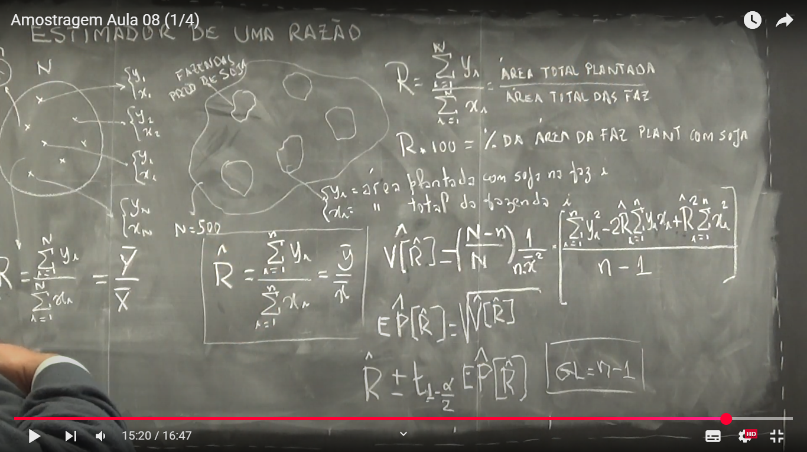
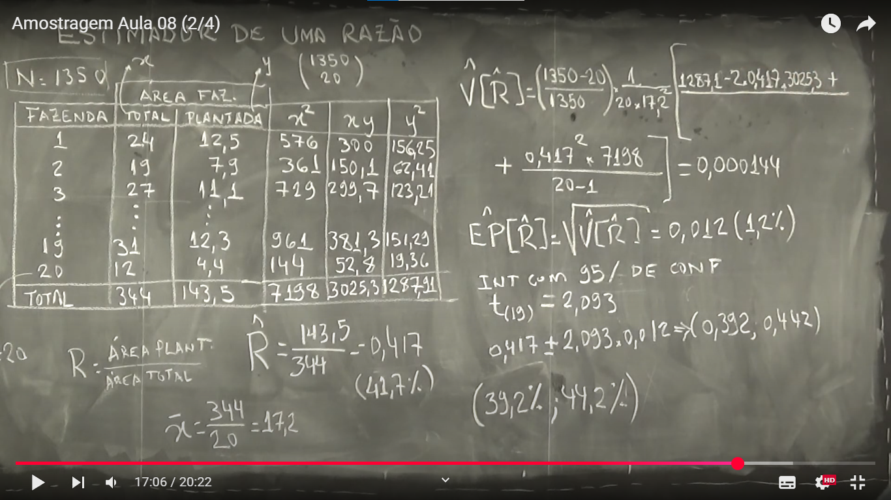
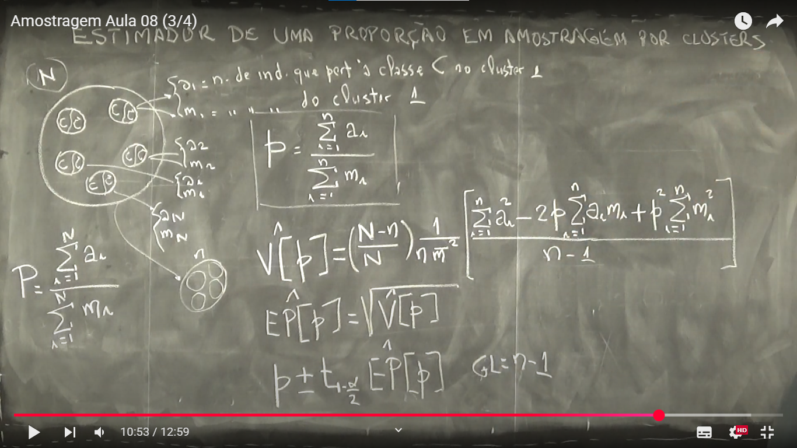
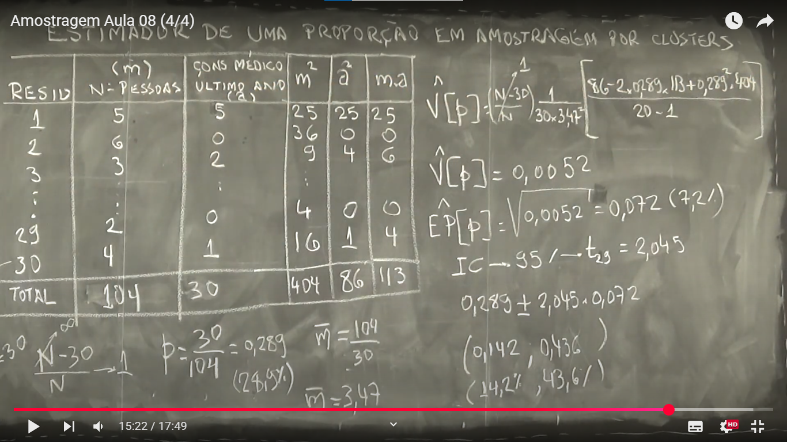

Semana 7
Semana 7
Aula 01 - Estimador de uma Razão
Objetivo
Estimar a razão populacional:
\[ R = \frac{\sum_{i=1}^{N} y_i}{\sum_{i=1}^{N} x_i} = \frac{\bar{Y}}{\bar{X}} \]
Essa razão representa o quociente entre duas variáveis populacionais de interesse. Por exemplo:
- \(y_i\): área plantada com soja na fazenda \(i\)
- \(x_i\): área total da fazenda \(i\)
Logo,
\[ R \cdot 100 = \% \text{ da área da fazenda plantada com soja} \]
🧪 Estimador da Razão (Plano de AAS)
Com uma amostra aleatória simples (sem reposição) de tamanho \(n\), o estimador de \(R\) é:
\[ \hat{R} = \frac{\sum_{i=1}^{n} y_i}{\sum_{i=1}^{n} x_i} = \frac{\bar{y}}{\bar{x}} \]
Onde: - \(\bar{y}\) é a média amostral de \(y\) - \(\bar{x}\) é a média amostral de \(x\)
📏 Variância do Estimador
A variância do estimador da razão \(\hat{R}\) com correção de população finita é:
\[ \hat{V[\hat{R}]} = \left( \frac{N - n}{N} \right) \cdot \frac{1}{n \bar{x}^2 } \left[\frac{\sum_{i=1}^{n} y_i^2 - 2\hat{R} \sum_{i=1}^{n} y_i x_i + \hat{R}^2 \sum_{i=1}^{n} x_i^2} {n - 1} \right] \]
Erro Padrão
O erro padrão do estimador é:
\[ \hat{EP[\hat{R}]} = \sqrt{\hat{V[\hat{R}]}} \]
Intervalo de Confiança
O intervalo de confiança para \(R\) com nível de confiança \(1 - \alpha\) é:
\[ \hat{R} \pm t_{1 - \frac{\alpha}{2}} \cdot \hat{EP[\hat{R}]} \]
Onde: - \(t_{1 - \frac{\alpha}{2}}\) é o valor da distribuição \(t\) de Student com:
\[ GL = n - 1 \]
Quadro da aula:  —
Aula 02 - Estimador de uma Razão (Exemplo Prático)
Vamos estimar a razão entre a área plantada com soja e a área total das fazendas, utilizando uma amostra aleatória simples de 20 fazendas entre um total de \(N = 1350\) fazendas.
Tabela da Amostra
| Fazenda | Área Total \(x_i\) | Área Plantada \(y_i\) | \(x_i^2\) | \(x_i y_i\) | \(y_i^2\) |
|---|---|---|---|---|---|
| 1 | 24 | 12.5 | 576 | 300 | 156.25 |
| 2 | 19 | 7.9 | 361 | 150.1 | 62.41 |
| 3 | 27 | 11.1 | 729 | 299.7 | 123.21 |
| … | … | … | … | … | … |
| 19 | 31 | 12.3 | 961 | 381.3 | 151.29 |
| 20 | 12 | 4.4 | 144 | 52.8 | 19.36 |
| Total | 344 | 143.5 | 7198 | 3025.3 | 1287.1 |
Estimativa da Razão
\[ \hat{R} = \frac{\sum y_i}{\sum x_i} = \frac{143.5}{344} = 0.417 \quad \text{ou} \quad 41.7\% \]
\[ \bar{x} = \frac{\sum x_i}{n} = \frac{344}{20} = 17.2 \]
Variância de \(\hat{R}\)
A fórmula da variância é:
\[ \hat{V[\hat{R}]} = \left( \frac{N - n}{N} \right) \cdot \frac{1}{n \bar{x}^2 } \left[\frac{\sum_{i=1}^{n} y_i^2 - 2\hat{R} \sum_{i=1}^{n} y_i x_i + \hat{R}^2 \sum_{i=1}^{n} x_i^2} {n - 1} \right] \]
Substituindo:
- \(N = 1350\)
- \(n = 20\)
- \(\bar{x} = 17.2\)
- \(\hat{R} = 0.417\)
- \(\sum y_i^2 = 1287.1\)
- \(\sum x_i y_i = 3025.3\)
- \(\sum x_i^2 = 7198\)
\[ V[\hat{R}] = \left( \frac{1330}{1350} \right) \cdot \frac{1}{20 \cdot 17,2^2} \cdot \left[\frac{1287,1 - 2 \cdot 0,417 \cdot 3025,3 + 0,417^2 \cdot 7198}{20 - 1} \right] \]
\[ \hat{V[\hat{R}]} \approx 0.000144 \]
Erro Padrão
\[ \hat{EP[\hat{R}]} = \sqrt{\hat{V[\hat{R}]}} = \sqrt{0.000144} = 0.012 \quad \text{ou} \quad 1.2\% \]
Intervalo de Confiança (95%)
Como \(n = 20\), temos \(df = 19\). O valor crítico da distribuição \(t\):
\[ t_{0.975}(19) = 2.093 \]
Construindo o intervalo:
\[ \hat{R} \pm t \cdot \hat{EP[\hat{R}]} = 0.417 \pm 2.093 \cdot 0.012 \]
\[ IC = (0.417 - 0.0251;\ 0.417 + 0.0251) = (0.392,\ 0.442) \]
Resultado final em porcentagem:
\[ IC = (39.2\%,\ 44.2\%) \]
Conclusão: A estimativa da razão de área plantada com soja é de 41.7%, com um intervalo de confiança de 95% que o intervalo entre 39.2% e 44.2% pode conter a verdadeira razão da área plantada com soja.
Outra forma de concluir: A estimativa da razão da área plantada com soja é de 41,7%, e com 95% de confiança, afirmamos que a razão populacional verdadeira está entre 39,2% e 44,2%.
Quadro da aula: 
Aula 03 - Estimador de uma Proporção em Amostragem por Clusters
A amostragem por clusters (ou conglomerados) é uma técnica na qual a população é dividida em grupos naturais (chamados de clusters), e uma amostra aleatória desses grupos é selecionada para observação. Dentro de cada cluster amostrado, todos (ou uma parte) dos elementos são observados.
Objetivo
Estimar a proporção populacional \(P\) de uma determinada característica usando uma amostragem por clusters.
Notação
- \(N\): número total de clusters na população
- \(n\): número de clusters na amostra
- \(m_i\): número de unidades no cluster \(i\)
- \(a_i\): número de unidades com a característica de interesse no cluster \(i\)
- \(p\): proporção estimada com base na amostra (proporção amostral)
Estimador da Proporção
\[ p = \frac{ \sum_{i=1}^{n} a_i }{ \sum_{i=1}^{n} m_i } \]
Variância do Estimador
\[ \hat{V[p]} = \left( \frac{N - n}{N} \right) \cdot \frac{1}{n \bar{m}^2} \cdot \left[ \frac{ \sum_{i=1}^{n} a_i^2 - 2p \sum_{i=1}^{n} a_i m_i + p^2 \sum_{i=1}^{n} m_i^2 }{n - 1} \right] \]
onde:
- \(\bar{m}\) é a média dos tamanhos dos clusters amostrados.
Erro Padrão
\[ \hat{EP[p]} = \sqrt{ \hat{V[p]} } \]
Intervalo de Confiança
\[ p \pm t_{1 - \frac{\alpha}{2}} \cdot \hat{EP[p]} \]
com \(t_{1 - \frac{\alpha}{2}}\) sendo o quantil da t-student com \(n - 1\) graus de liberdade.
Observações
- A amostragem por clusters é útil quando a população está geograficamente dispersa ou o custo de observação individual é alto.
- A variância é geralmente maior do que na amostragem aleatória simples, pois os elementos dentro de um mesmo cluster tendem a ser semelhantes.
Representação Ilustrativa: 
Aula 04 - Estimador de uma Proporção em Amostragem por Clusters (Exemplo Prático)
Dados da Situação
- \(N = \infty\): total de residências (clusters) na população (para esse exercício vamos supor que o N é um número muito grande)
- \(n = 30\): número de residências (clusters) amostradas
- Para cada residência \(i\):
- \(m_i\): número de pessoas na residência
- \(a_i\): número de pessoas que consultaram um médico no último ano
Tabela Resumo
| Residência | \(m\) (Nº Pessoas) | \(a\) (Consultas) | \(m^2\) | \(a^2\) | \(m a\) |
|---|---|---|---|---|---|
| 1 | 5 | 5 | 25 | 25 | 25 |
| 2 | 6 | 0 | 36 | 0 | 0 |
| 3 | 3 | 0 | 9 | 0 | 0 |
| … | … | … | … | … | … |
| 29 | 2 | 0 | 4 | 0 | 0 |
| 30 | 4 | 1 | 16 | 1 | 4 |
| Total | 104 | 30 | 404 | 86 | 113 |
Estimativa da Proporção
\[ p = \frac{\sum a_i}{\sum m_i} = \frac{30}{104} = 0{,}289 \quad (28{,}9\%) \]
\[ \bar{m} = \frac{104}{30} \approx 3{,}47 \]
Variância Amostral
Usamos a fórmula da variância para amostragem por clusters:
\[ \hat{V[p]} = \left( \frac{N - n}{N} \right) \cdot \frac{1}{n \bar{m}^2} \cdot \left[ \frac{\sum a_i^2 - 2p \sum a_i m_i + p^2 \sum m_i^2 }{n - 1} \right] \]
Substituindo os valores:
- \(N = \infty\)
- \(n = 30\)
- \(\bar{m} = 3{,}47\)
- \(\sum a_i^2 = 86\)
- \(\sum a_i m_i = 113\)
- \(\sum m_i^2 = 404\)
- \(p = 0{,}289\)
\[ \hat{V[p]} = \left( \frac{\infty - 30}{\infty} \right) \cdot \frac{1}{20 \cdot 3,47^2} \cdot \left[ \frac{86 - 2 \cdot 0,289 \cdot 113 + 0,289^2 \cdot 404}{19} \right] \approx 0,0052 \]
Erro Padrão
\[ \hat{EP[p]} = \sqrt{\hat{V[p]}} = \sqrt{0,0052} \approx 0,072 \quad (7,2\%) \]
Intervalo de Confiança de 95%
Com \(t_{19} \approx 2,045\):
\[ IC_{95\%} = 0,289 \pm 2,045 \cdot 0,072 = (0,142;\ 0,436) \]
Ou, em porcentagem:
\[ IC_{95\%} = (14,2\%,\ 43,6\%) \]
Conclusão
A estimativa da proporção de pessoas que consultaram um médico no último ano é de 28,9%, e o intervalo de confiança de 95% indica que essa proporção pode estar entre 14,2% e 43,6%, com base na amostra por clusters.
Quadro da aula: 